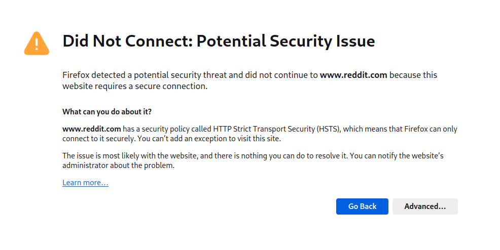

<!doctypehtml><html lang=en><link href=data:, rel=icon><title>Sukalaper - Cara-Mengakses-Reddit-Pada-Arch-Linux</title><meta charset=utf-8><meta content=blog name=description><meta content="index, follow"name=robots><meta content="width=device-width,initial-scale=1"name=viewport><style>body{overflow-y:scroll;font:16px monospace,monospace}pre{margin:0;overflow-x:hidden}img{display:block;margin-left:auto;margin-right:auto;width:400px;max-width:100%;border-radius:8px}.blur-text{color:#000;filter:blur(4px)}.quote{margin-top:-10px;margin-bottom:-10px;border-left:3px solid #ccc}@media(max-width:999px){#c{display:block;font-size:2.02vw}}@media(prefers-color-scheme:white){body{background:#000;color:#fff}a{color:#6cf}}</style><div style="display:table;margin:16px auto"><div id=c><pre>
+------------------------------------------------------------------------------+
|                                                                              |
|  <a href=/ >/home/sukalaper</a>                                      <a href=/blog>blog/</a>  <a href=/paper>paper/</a>  <a href=/about>about/</a>  |
|                                                                              |
+------------------------------------------------------------------------------+


Cara Mengakses Reddit Pada Arch Linux
________________________________________________________________________________

- Ikhtisar                                                                 <a href=#1.0>[1.0]</a>
- Cara Mengakses Reddit                                                    <a href=#2.0>[2.0]</a>
- Referensi                                                                <a href=#3.0>[3.0]</a>


<span id=1.0><a href=#1.0>[1.0]</a></span> Ikhtisar
________________________________________________________________________________

Sebagai peselancar internet (saya jarang mengakses Deepweb<a href=#1>[1]</a> jadi saya tidak 
menyebut diri saya sebagai penyelam, peselancar adalah penafian yang (mungkin)
lebih tepat) saya cukup sering melihat beberapa artikel di Reddit<a href=#2>[2]</a>. Sayangnya
pemerintah memblokir akses ke situs tersebut karena cukup banyak konten negatif.
Padahal menurut saya X leb....

Saat saya sedang mencari referensi untuk penggunaan salah satu alat pengelola 
jaringan pada GNU/Linux, saya mendapat sebuah jawaban pada salah satu situs 
tersebut diarahkan ke Reddit namun inilah hasilnya.

  


<span id=2.0><a href=#2.0>[2.0]</a></span> Cara Mengakses Reddit
________________________________________________________________________________

Melansir pada petunjuk ini<a href=#3>[3]</a> untuk GNU/Linux cukup tambahkan file ini pada 
/etc/hosts.

  $ sudo vim /etc/hosts
  
  # Unblock Reddit.
  151.101.129.140   i.redditmedia.com
  52.34.230.181     www.reddithelp.com
  151.101.65.140    g.redditmedia.com
  151.101.65.140    a.thumbs.redditmedia.com
  151.101.1.140     new.reddit.com
  151.101.129.140   reddit.com
  151.101.129.140   gateway.reddit.com
  151.101.129.140   oauth.reddit.com
  151.101.129.140   sendbird.reddit.com
  151.101.129.140   v.redd.it
  151.101.1.140     b.thumbs.redditmedia.com
  151.101.1.140     events.reddit.com
  54.210.123.98     stats.redditmedia.com
  151.101.65.140    www.redditstatic.com
  151.101.193.140   www.reddit.com
  52.3.23.26        pixel.redditmedia.com
  151.101.65.140    www.redditmedia.com
  151.101.193.140   about.reddit.com
  52.203.76.9       out.reddit.com

Kemudian simpan, lalu muat ulang peramban dan hasilnya akan seperti ini.

  <a href=#3.0>[3.0]</a></span> Referensi
________________________________________________________________________________

<span id=1><a href=#1>[1]</a></span> <a href=https://www.techtarget.com/whatis/definition/deep-Web>https://www.techtarget.com/whatis/definition/deep-Web</a>
<span id=2><a href=#2>[2]</a></span> <a href=https://www.reddit.com/>https://www.reddit.com/</a>
<span id=3><a href=#3>[3]</a></span> <a href=https://medium.com/jasonganub/how-to-access-reddit-in-indonesia-d185bb532380>https://medium.com/jasonganub/how-to-access-reddit-in-indonesia-d185bb532380</a>

________________________________________________________________________________

                                          Sukalaper © 2024, All rights reserved.

</pre></div></div>


